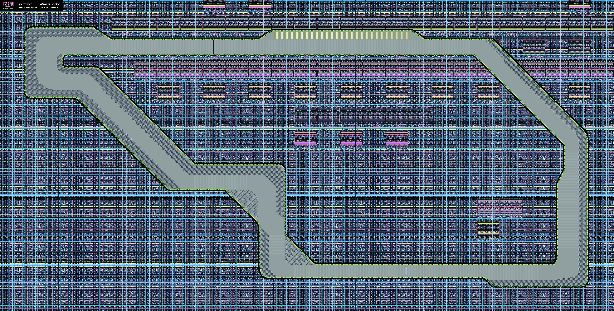
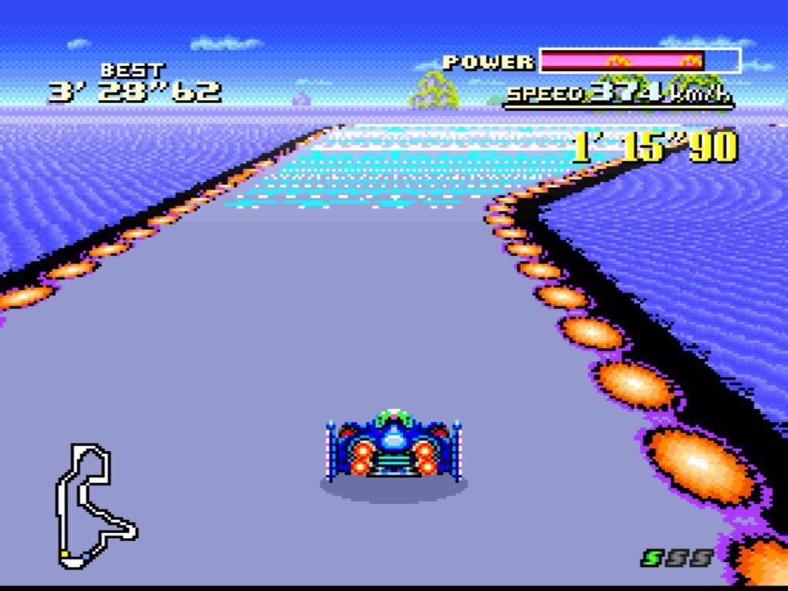
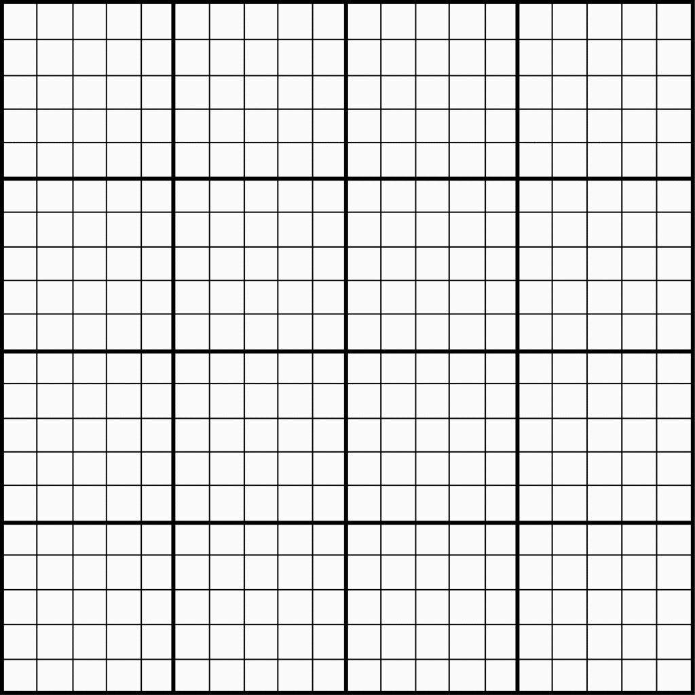
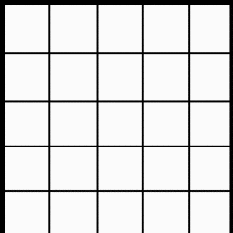
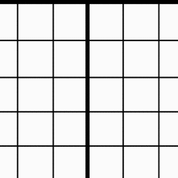
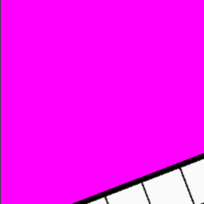

mode-seven.js: A 2D Canvas Experiment
May 8, 2017 02:50 · 2876 words · 14 minutes read
If you don’t know what Mode-7 is, then allow me a moment to enlighten you (well, allow me to copy the summary from Wikipedia).
Mode 7 is a graphics mode on the Super NES video game console that allows a background layer to be rotated and scaled on a scanline-by-scanline basis to create many different effects. The most famous of these effects is the application of a perspective effect on a background layer by scaling and rotating the background layer in this manner. This transforms the background layer into a two-dimensional horizontal texture-mapped plane that trades height for depth. Thus, an impression of three-dimensional graphics is achieved.
I’ve been fascinated with this method for the past week, and have been trying to recreate it by getting as close as I can to the metal of canvas as possible. That is, I’m interested in learning how this was done using the technology at the time, and not in mimicking it via advanced 3D frameworks.
Purpose
To recreate the original Super Nintendo Entertainment System’s Mode-7 graphic’s mode using HTML5 canvas and JavaScript
Materials
- pixelbutler - A low-level framebuffer simulator in HTML5 Canvas for making ultra low-res games.
- Chrome - My browser… with all of the sweet dev tool goodness
- Atom - My editor
- serve-static - A small static node server
- codepen - For showing incremental progress
Research
The research I did for this was first to read the afore-linked Mode-7 Wikipedia article, grab an illegal rom, and play a couple rounds of F-Zero (which is, arguably, the finest example of Mode-7 on the SNES). After spending too many minutes lost hours reliving my childhood, I decided it was time to dig into it.
Method
Basically, the effect I’m shooting for is the planar texture mapping used in games like Mario Kart and F-Zero. Basically, I want to use an affine transformation to figure out, for a given screen coordinate, which pixel I should map to it from a given texture.
In short, I want to take this:

and display it like:

The article gives the most important information in the form of an equation:
`[[x\`],[y\`]] = [[a,b,x_0],[c,d,y_0]][[x - x_0],[y - y_0],[1]]`
But perhaps the second most important information is something I missed before:
[M]any games create additional effects by setting a different transformation matrix for each scanline.
Live Coding
From here till the conclusion section, I’ll be writing stream of conscious as I attempt to solve this..
5.8.2017
03:43 - First things first, gotta get a canvas defined and a source image to use. So that I can easily see what I’m doing, I’m going to use a 256x256 canvas and i’m going to display the top left quarter of a 1024x1024 grid image using nothing but pixel data:

05:25 - There’s a mocking bird that lives in a tree in my front yard (which is only about 15 feet from the open window I generally sit at). This morning he (yes… he… I did my research) has been singing a song that sounds a lot like he’s trying to get the attention of someone named “Jeffery”. Like… incessantly, he’s been screaming “JEFFERYJEFFERYJEFFERYJEFFERYJEFFERY”… and then singing a chorus of what I call “Car Alarm in Mockingbird Minor” (which I’ve heard many times from him before.)
I sure hope he finds Jeffery so he can go bother him and leave me to my studies.
Addendum: The most annoying (and frankly astonishing) thing he’s ever done, is learn the sounds that Ryder’s scanner makes when she’s getting close to an artifact in Mass Effect: Andromeda. I’ve been sitting up, late at night working, only to hear the “proximity warning” from the game ring out. A clever feather is he…
Ass.
05:37 - Wrote a utility class to load an image from url and allow easy access of pixel data given an x and y:
// Handy ImageData Interface
class PixelData {
constructor(imageData, colorChannels = 4) {
this._imageData = imageData
this.colorChannels = colorChannels
}
get width() {
return this._imageData.width
}
get height() {
return this._imageData.height
}
// returns an array of r g b a values, respectively
at(x, y) {
const idx = (x + (y * this.width)) * this.colorChannels
const data = this._imageData.data
return [
data[idx],
data[idx+1],
data[idx+2],
data[idx+3]
]
}
// return a pixelbutler color object
rgb(x, y) {
const channels = this.at(x, y)
return pixelbutler.rgb(
channels[0],
channels[1],
channels[2]
)
}
}
PixelData.fromURL = function(url) {
return new Promise((resolve, reject) => {
const img = new Image()
try {
img.onload = function() {
const cnvs = document.createElement('canvas')
cnvs.width = img.width
cnvs.height = img.height
const cntxt = cnvs.getContext('2d')
cntxt.drawImage(img, 0, 0)
const pxls = cntxt.getImageData(0,0,cnvs.width, cnvs.height)
resolve(new PixelData(pxls))
}
img.crossOrigin = "Anonymous"
img.src = url
} catch(e) {
reject(e)
}
})
}
and I use it as such:
let pixels
async function main() {
// canvas setup //
pixels = await PixelData.fromURL(SRC)
const channels = pixels.at(20, 20)
// -> [255, 255, 255, 1]
const color = pixels.rgb(20, 20)
// -> {r: 251, g: 251, b: 251, a: 255}
}
06:49 - That damn bird is -still- screaming for Jeffery.
06:51 - And now I have a grid section displayed in my canvas by using the shader method of pixelbutler. All this method does is spin through every pixel in my canvas passing x, y, and rgb arguments to the iteration method:
function loop() {
ctx.clear()
ctx.shader((x, y) => {
// 1 - 1 map of texture x,y to screen x,y
const c = pixels.rgb(x, y)
return c
})
ctx.render()
raf(loop)
}
If I understand my path correctly, from here on in, most, if not all, code changes will reside inside of the shader’s iteration method

06:51 - And now to get some transformations working. First thing I want to get working is a simple planar projection. That is, I want to take my “flat” grid image and give it perspective. In as simple terms as I can explain it to myself, I want to transform a square section of the grid into a trapezoid, with convergence near the horizon. But first, I’m going to shift the section of the image that I’m pulling from to be the center 256 pixels of the grid image by shifting the pixel lookup by 384 pixels on the x axis
ctx.shader((x, y) => {
const c = pixels.rgb(x + 384, y)
return c
})
provides this output:

07:07 - A sidebar while I get Mathjax working on the blog…
07:42 - Some 2D Linear Algebra Notes:
Basics
- A geometric transformation will map points in one space to points in another: `(x\`, y\`, z\`) = f(x, y, z)`
- `x\`` is pronounced:
x prime - A point `p = (x, y)` can be represented as a column vector `[[x],[y]]` or a row vector `[x, y]`
- A 2-D Transformation M represented by matrix `M = [[a,b],[c,d]]`
Super Important
Then, a 2x2 transformation with `M` is: `[[x\`],[y\`]] = [[a,b],[c,d]][[x],[y]]`
Which translates to:
`{
[x\` = ax + by],
[y\` = cx + dy]
}`
These two formulas form the basis for all 2D affine transformations
Common transformation matrices
Identity
values: `a = d = 1; b = c = 0`
matrix: `[[1,0],[0,1]]`
resulting formulas:
`{
[x\` = (1)x + (0)y rarr x\` = x],
[y\` = (0)x + (1)y rarr y\` = y]
}`
effect: Doesn’t move the points at all
Scaling
values: `a>0; d>0; b = c = 0`
matrix: `[[a,0],[0,d]]`
example: `[[3, 0], [0, 2]]`
resulting formulas:
`{
[x\` = ax => (3)x => 3x],
[y\` = dy => (2)y => 2y]
}`
effect: Non-uniform (differential) scaling in both the x and y axes
Reflection
values: `a < 0 or d < 0; b = c = 0;`
matrix: `[[a,0],[0,d]]`
example: `[[-1, 0], [0, 1]]`
resulting formulas from example:
`{
[x\` = ax => (-1)x => -x],
[y\` = dy => (1)y => y]
}`
effect: Reflection across the axis that goes negative
Shear
values: `a=d=1; c=0; b=?;`
matrix: `[[1,b],[0,1]]`
example: `[[1, 2], [0, 1]]`
resulting formulas from example:
`{
[x\` = ax + by => x + 2y],
[y\` = dy => (1)y => y]
}`
effect: Reflection across the axis that goes negative
Effect on Unit Square
`[[a,b],[c,d]][bb p, bb q, bb r, bb s] = [bb p\`, bb q\`, bb r\`, bb s\`]`
It’s important to remember that the values identified by `[bb p, bb q, bb r, bb s]` aren’t scalars, but individual points that make up the unit square:
- `bbp = [[0],[0]]` => bottom left
- `bbq = [[1],[0]]` => bottom-right
- `bbr = [[1],[1]]` => top-right
- `bbs = [[0],[1]]` => top-left
Here it is again with values plugged in:
`[[a,b],[c,d]][[0,1,1,0],[0,0,1,1]] = [[0,a,a+b,b],[0,c,c+d,d]]` And then back out to individual points: - `bbp\` = {[x\` = ax + by], [y\` = cx + dy]} = [[0],[0]]` => bottom left
- `bbq\` = {[x\` = ax + by], [y\` = cx + dy]} = [[a],[c]]` => bottom right
- `bbr\` = {[x\` = ax + by], [y\` = cx + dy]} = [[a+b],[c+d]]` => top right
- `bbs\` = {[x\` = ax + by], [y\` = cx + dy]} = [[b],[d]]` => top left
Why do I keep adding the `x\`,y\`` formulas in there? It’s mostly for my own personal edification. Repetition is super helpful for me.
- `a` and `d` give `x`- and `y`-scaling
- `b` and `c` give `x`- and `y`-shearing
Rotation
After the above, it should be inconsequential for me to create a matrix to rotate around the origin.. Again the equation for finding the new `(x,y)` coordinates: `{ [x\` = ax + by], [y\` = cx + dy] }`
The set of formulas for rotating about a point are: `{ [x\` = x cos(theta) - y sin(theta)], [y\` = y cos(theta) + x sin(theta)] }`
Extrapolating that to what I know of matrices to this point I think it’s safe to assume the following:
`{
[a = cos(theta)],
[b = -sin(theta)],
[c = sin(theta)],
[d = cos(theta)]
}`
or in matrix notation:
`[[cos(theta), -sin(theta)],[sin(theta), cos(theta)]]`
so if I wanted to take the unit square and rotate it `30@` around the origin:
`p\` = {[x\` = 0],[y\`=0]}`
`q\` = {[x\` = cos(30)],[y=sin(30)]}`
`r\` = {[x\` = cos(30) - sin(30)],[y=sin(30) + cos(30)]}`
`s\` = {[x\` = -sin(30)],[y = cos(30)]}`
In the plot below, The green square is the identity square: 1 unit to each side. The magenta square, is the square post rotation of 30 degrees (`0.523599 radians`)
In short:
`M_(Rotation) = R(theta) = [[cos(theta), -sin(theta)],[sin(theta), cos(theta)]]`
Linear Transformations
From the unit square experiment (and my reading), it appears that a 2x2 transformation also implies a representation of a point in a new coordinate system
`bbp\``
`= bbMp`
`= [[a,b],[c,d]][[x],[y]]`
`= [bbu,bbv][[x],[y]]`
`= x*bbu+y*bbv`
Such that `bbu = [a,c]^T` and `bbv = [b,d]^T` represent vectors that define a new basis for a linear space
This transformation to a new basis is a linear transformation.
In summary, 2x2 linear transformations can SCALE, ROTATE, REFLECT and SHEAR
But I’m after more…
10:59 - Hooray… more reading…
Affine transformations
Affine transformations are based on the idea that both the BASIS and the ORIGIN can change. So, to do this… we have to augment the new linear space `bbu, bbv` with an origin `bbt`.
Important to note:
* `bbu` and `bbv` are BASIS VECTORS (henceforth basis)
* `bbt` is a POINT (henceforth the origin)
* `bbu, bbv, bbt`, that is basis and origin, are known as a FRAME for an AFFINE SPACE
Mathematically, a change of FRAME is called an affine transformation and is represented as:
`bbp\` = x*bbu + y*bbv+bbt`
Representation
To represent transformations among affine frames as matrices, move the problem to 3D-space by adding a third component to every point:
`bbp\``
`= bbMp`
`= [[a,b,t_x],[c,d, t_y],[0,0,1]][[x],[y],[1]]`
`= [bbu,bbv,bbt][[x],[y],[1]]`
`= x*bbu+y*bbv+1*bbt`
In contrast to previously:
* `[a,c,0]^T` and `[b, d, 0]^T` represent vectors
* `[t_x, t_y, 1]^T`, `[x, y, 1]^T` and `[x\`,y\`,1]^T` prepresent points
Homogenous Coordinates
This allows translation and transformation as a single matrix operation:
`[[x\`],[y\`],[1]] = [[1,0,t_x],[0,1,t_y],[0,0,1]][[x],[y],[1]]`
`{
[x\` = x + t_x],
[y\` = y + t_y]
}`
Using an origin of `bbt = [[2.25],[4.5]]`, the following affine transformation matrix is created: `[[1,0,2.25],[0,1,4.5],[0,0,1]]`
This is nothing more than a simple translation.
But… I think I understand a bit better…
For example, if I wanted to:
Rotate About an Arbitrary Point
Which is -exactly what I’m trying to do for F-Zero. I’m need to rotate the track texture around the point that the player is currently at.
Using homogenous coordinate, you can specify a rotation, `bbR_q` around any point: `bbq = [q_x, q_y,1]^T` with a matrix!!!
Here’s the setup code I used for these charts:
const unitSquare = [
[0,0],
[1,0],
[1,1],
[0,1]
]
const c30 = cos(0.523599)
const s30 = sin(0.523599)
const transform = (points, transformer) => points.map(transformer)
const drawSquare = (board, points) => {
return board.create('polygon', points.map(p => {
return board.create('point', p, {withLabel: false, size: 0, fixed:true})
}))
}
const rotationTransformer = ([x,y]) => {
return [
x*c30 + y*-s30,
x*s30 + y*c30
]
}
Step 0:
The object to rotate and the point `bbq` to rotate around:
`bbq = [[-0.5], [1.25], [1]]^T`
const q = [-0.5, 1.25]
const affineSquare0 = transform(unitSquare, ([x,y]) => [x+2, y + 4])
const affinsq0 = drawSquare(ab1, affineSquare0)
let qpnt = ab1.create('point', [q[0], q[1]], {size: 3, fixed: true, name: 'q0'})
Step 1:
Translate `bbq` to origin
const q0 = [-q[0], -q[1]]
const affineSquare1 = transform(affineSquare0, ([x, y]) => [x+q0[0], y+q0[1]])
const affinsq1 = drawSquare(ab2, affineSquare1)
qpnt = ab2.create('point', [q[0], q[1]], {size: 3, fixed: true, name: 'q0', fillOpacity: 0.1, strokeOpacity: 0.1})
qpnt1 = ab2.create('point', [0, 0], {size: 3, fixed: true, name: 'q1'})
Step 2:
Rotate
const affineSquare2 = transform(affineSquare1, rotationTransformer)
const affinsq2 = drawSquare(ab3, affineSquare2)
qpnt = ab3.create('point', [q[0], q[1]], {size: 3, fixed: true, name: 'q0', fillOpacity: 0.1, strokeOpacity: 0.1})
qpnt1 = ab3.create('point', [0, 0], {size: 3, fixed: true, name: 'q1'})
Step 3:
Translate Back
const affineSquare3 = transform(affineSquare2, ([x, y]) => [x+q[0], y+q[1]])
const affinsq3 = drawSquare(ab4, affineSquare3)
qpnt = ab4.create('point', [q[0], q[1]], {size: 3, fixed: true, name: 'q0'})
qpnt1 = ab4.create('point', [0, 0], {size: 3, fixed: true, name: 'q1', fillOpacity: 0.1, strokeOpacity: 0.1})
13:39 - Ok, I think I have all the information I need to make this work… I think…
14:07 - Nope. Need to learn one one or two more concepts
Barycentric coordinates
Apparent, a set of points can be used to create an affine frame. Let’s take, for instance, a triangle `ABC` and a point `bbp`
We can form a frame with an origin `C` and the vectors from `C` to the other vertices: `bbu = A - C`, `bbv = B - C`, `t = C`
Which then allows `bbp` to be expressed in this coordinate frame:
`bbp = alpha bbu + beta bbv + bbt`
And I have -no- idea what that means… but it seems like, in my situation, `bbp` is the screen offset, `C` is the horizon, and `B` is the origin… does this sound right to anyone else?
Well, the coordinates `(alpha, beta, gamma)` are called the barycentric coordinates of `bbp` relative to `A,B,` and `C`
But… uhh.. if that’s true, how do I -find- them?
You know what? I think I’m going down the wrong rabbit hole here…
14:27 Back to code… seriously this time.
THE CODE
Looking again at the original Mode-7 Formula for planar texture mapping:
`[[x\`],[y\`]] = [[a,b,x_0],[c,d,y_0]][[x - x_0],[y - y_0],[1]]`
If there’s anything I’ve learned, it’s that this confusing mess should be able to be simplified down to: `{ [x\` = ax + by], [y\` = cx + dy] }`
But I think what I’m really supposed to do is: `{ [x\` = ax + by + t_x], [y\` = cx + dy + t_y] }`
But, I’m gonna step back and try to do some of the more simple, linear transformations first. I’m going to use my transformer method I had setup, and I’m simply going to run through an identity matrix to, once again, map 1-1 texture coords to screen coords.
I’m keeping the previously mentioned PixelData class… it’s super handy, but aside from that, nothing’s left from the previous.
// runs points through a transformer
const transform = (points, transformer) => points.map(transformer)
// no transforms... just straight mapping 1,1
const identityTransformer = ([x,y]) => [x,y]
function main() {
/* setup and image acquisition */
// builds an array of [x,y] screen points
for(let y = 0; y < 256; y++) {
for(let x = 0; x < 256; x++) {
points.push([x, y])
}
}
// runs raw screen points through transformer
draw()
}
// a single draw call
function draw() {
transformed = transform(points, createScaleTranformer(zoom))
ctx.clear()
points.forEach((p,idx) => {
const [x,y] = transformed[idx]
const pixel = pixels.rgb(x,y)
ctx.setPixel(p[0], p[1], pixels.rgb(x,y))
})
ctx.text(1,1,`zoom: ${zoom}`, magenta)
ctx.render()
}
And, just as expected: I have a quarter of my grid image… just like -many- hours ago.
Moving on to the next transform from above: Scaling
// a little scale transformer creator
const createScaleTransformer = (a,d=a) => ([x,y]) => [~~(a*x),~~(d*y)]

Reflection Reflection won’t be very visible with the current
18:55 - Had to take care of some things…
Shear Let’s check out shearing with the current setup…

Rotation About the Origin
Yup, got that too!

Rotation about an Arbitrary Point
`bbq = [768, 64]`

if that doesn’t make you a bit motion sick… well… King’s To You, I suppose